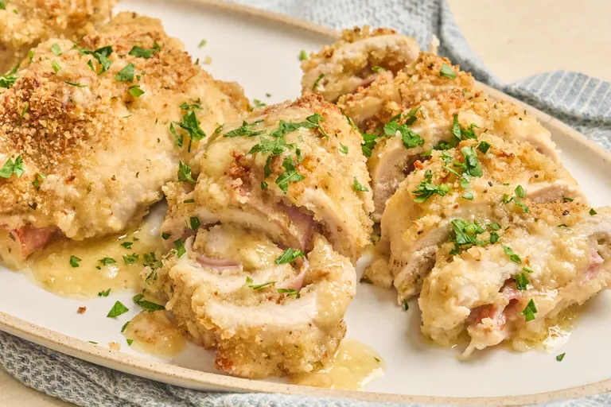

Italian baked chicken is a flavorful and comforting dish made with six tender chicken cutlets, seasoned with kosher salt and freshly ground black pepper. The chicken is coated in a delicious mixture of Italian-seasoned breadcrumbs and grated Parmesan cheese, giving it a crispy, golden crust when baked. Each cutlet is layered with a slice of savory ham or prosciutto and melted provolone cheese, adding a rich, cheesy center and a delicious combination of Italian-inspired flavors.
The chicken is baked with a flavorful sauce made from chicken broth, white wine, extra-virgin olive oil, and softened butter, which helps keep the chicken moist and tender while adding richness to the dish. As it bakes, the cheese melts over the crispy coating and the sauce develops a savory, aromatic flavor. The finished Italian baked chicken is golden on the outside, juicy on the inside, and perfect for serving as a satisfying main course with vegetables, pasta, or a fresh salad.
Home